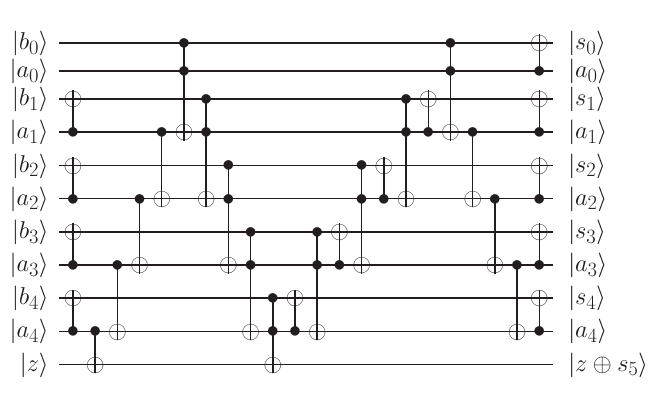

This figure is taken from this paper.
This circuits finds integer sum of two 5-digit numbers a4a3a2a1a0
and b4b3b2b1b0 with the
answer calculated into zb4b3b2b1b0.
Particulars of the construction of adders such as this are discussed in the following paper: Y. Takahashi, S. Tani, N. Kunihiro. Quantum Addition Circuits and Unbounded Fan-Out, October 2009, arXiv:0910.2530v1.